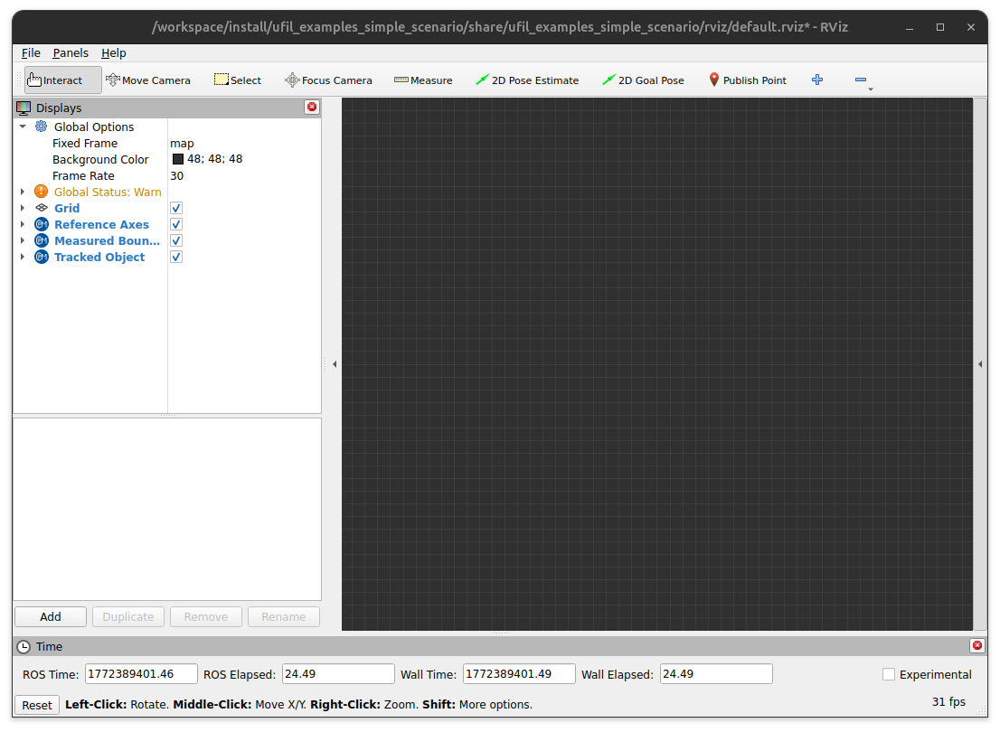
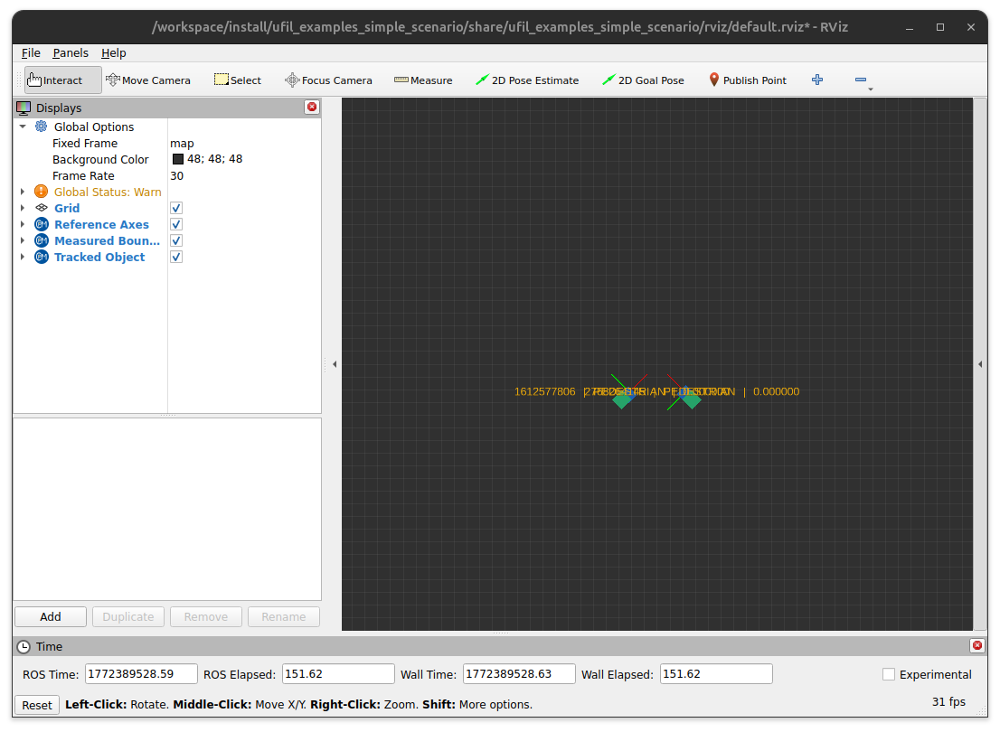
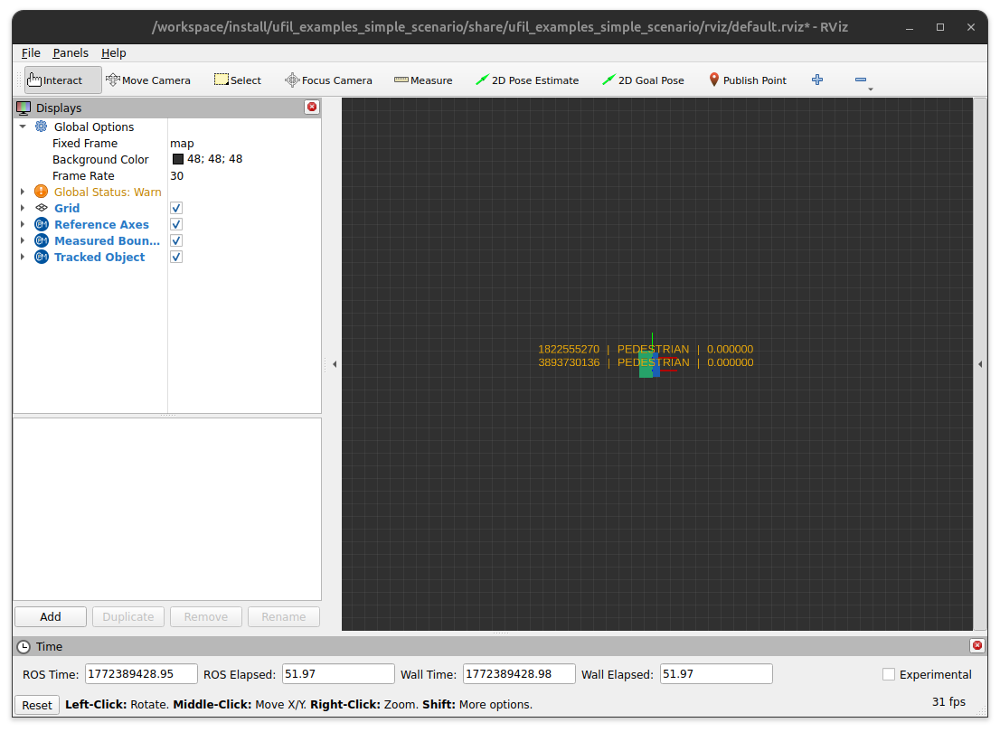

Simple Scenario
The Simple Scenario example in Ufil demonstrates one of the most basic use cases in the framework.
It consists of three packages and is included in the ufil_examples module.
This scenario helps you understand the interaction between the simulation, tracker, and visualization components.
Usage
Start Visualization
Begin by launching the visualization, which displays:
Ground truth object states
Simulated measurements
Tracker estimates
ros2 launch ufil_examples_simple_scenario visualization.launch.py
The command will open an RViz window, which should look similar to this:
{kind=link}

Start the Tracker
In a second terminal, start the tracker. This launches a Ufil tracker node that subscribes to measurements, performs tracking, and outputs estimates.
ros2 launch ufil_examples_simple_scenario tracker.launch.py
Start the Simulation
In a third terminal, start the simulation. Ufil provides three preconfigured scenarios. You can create additional scenarios by adding a .yaml file to the config directory of the simulator and specifying it during launch:
ros2 launch ufil_examples_simple_scenario simulation.launch.py scenario:=crossing.yaml
The visualization will now display the tracking in action.
Scenario Examples
Crossing Scenario
Selecting crossing.yaml produces output like this:
{kind=link}

Passing Scenario
Selecting passing.yaml produces output like this:
{kind=link}
Parallel Scenario
Selecting parallel.yaml produces output like this:
{kind=link}

Example Configuration
Below is an example configuration for the crossing scenario in Ufil. This YAML file defines two agents moving in a crossing pattern.
name: crossing
runtime: 10
error_covariance: 0.1
agents:
- id: 1
dimension:
width: 1.0
length: 1.0
height: 1.0
orientation: 45
starting:
position: [-10.0, -10.0]
time: 0
stopping:
position: [10.0, 10.0]
time: 10
- id: 2
dimension:
width: 1.0
length: 1.0
height: 1.0
orientation: 135
starting:
position: [10.0, -10.0]
time: 0
stopping:
position: [-10.0, 10.0]
time: 10
Note
You can create your own scenarios by following this structure. Save the YAML file in the config directory of the ufil_examples_simple_scenario_simulator and specify it during launch with the scenario argument:
ros2 launch ufil_examples_simple_scenario simulation.launch.py scenario:=your_scenario.yaml